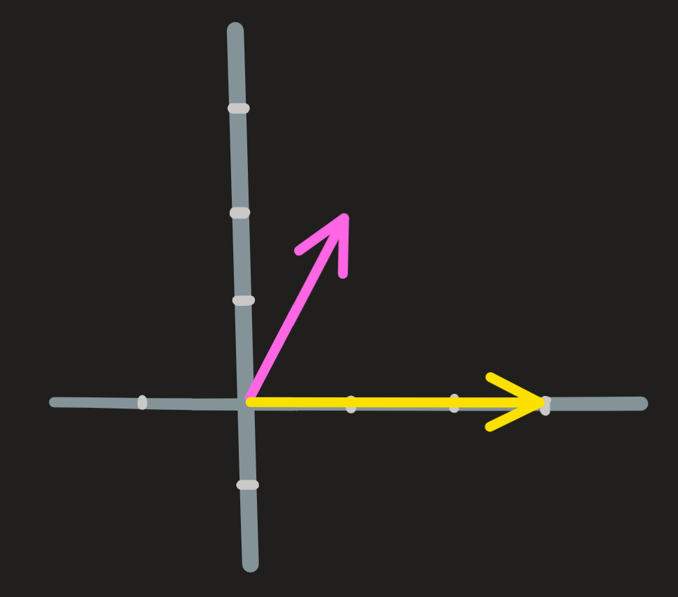
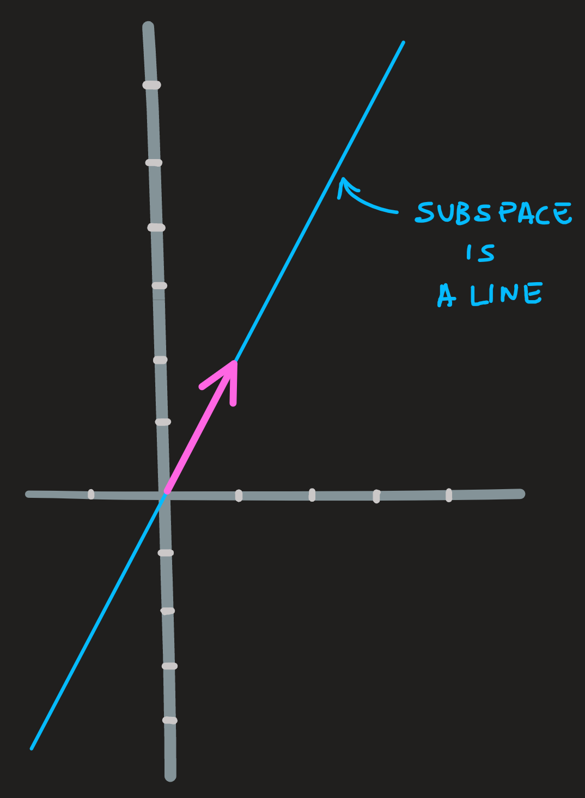
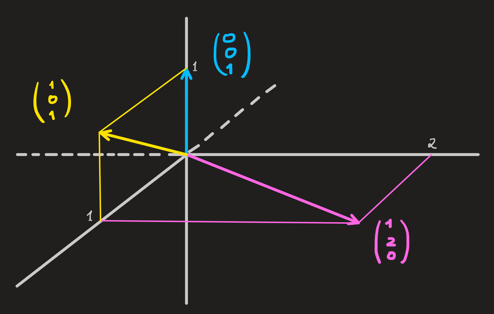
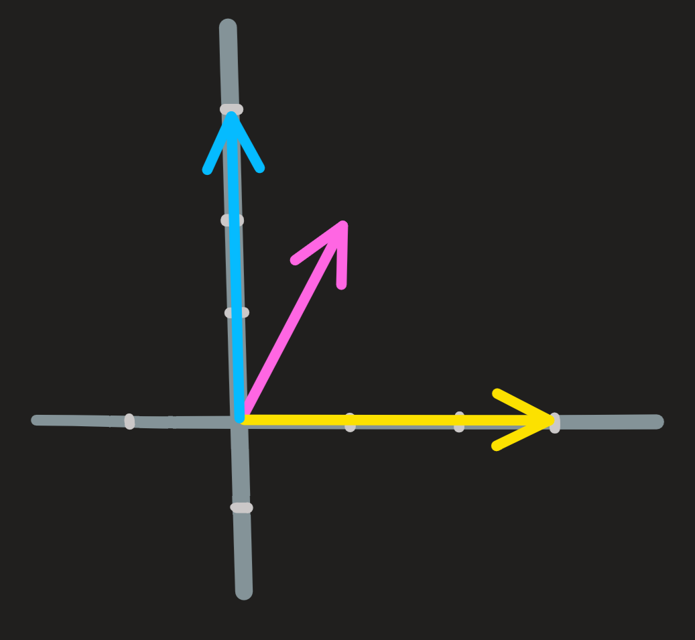

Vector spaces and subspaces
Vector spaces and Subspaces
The operation of linear combination allow us to construct vector spaces and vector subspaces. In this section we want to look at some figures and from them deduce how to construct spaces. In later sections we will adopt a new approach: to describe the space by an equation or system of equations \(A\mathbf{x}=\mathbf{0}\).
Key concepts: vectors space, subspace, span, form of the elements, direct sum.
Example 1
Consider the vectors \(\begin{pmatrix} 1\\2\end{pmatrix}\) and \(\begin{pmatrix} 3\\0\end{pmatrix}\). Now multiply both by every possible scalar and then add them; the end result is a set of vectors. All these vectors constitute a two dimensional plane, which we call \(\mathbb{R}^2\):

From the picture, it is easy to convince yourself that any linear combination of two vectors of the plane \(\mathbb{R}^2\) is another vector in \(\mathbb{R}^2\), in particular from the l.c. \(0\begin{pmatrix} 1\\2\end{pmatrix}+0\begin{pmatrix} 3\\0\end{pmatrix}\) we get the origin. Hence we write:
\[ \mathbb{R}^2 = span\{\begin{pmatrix} 1\\2\end{pmatrix},\begin{pmatrix} 3\\0\end{pmatrix}\} \tag{1}\] Another important way to write this set is to identify the form of its elements, the form of its elements is:
\[ a(1,2)+b(3,0) \]
or written more compactly \((a+3b,2a)\); the set of this elements is
\[ \{(a+3b,2a)\,\,|\,\,a,b\in\mathbb{R}\}=\mathbb{R}^2 \]
The idea of a set of things (in this case column vectors) where any l.c. of its elements gives us again an element of the set (we say the set is closed under l.c.) is very important and will appear countless times in this course. Hence we give it a special name: vector space.
Definition 1 [Vector space] := a set of vectors with the property of being closed under linear combinations
\(\mathbb{R}^2\) is a vector space.
Notice the same space comes about if we consider \(\begin{pmatrix} 1\\0\end{pmatrix}\) and \(\begin{pmatrix} 0\\1\end{pmatrix}\) as our starting vectors. More, any other pair of vectors of \(\mathbb{R}^2\) that point in distinct directions, do the job. Hence we write
\[ \mathbb{R}^2 = span\{\begin{pmatrix} 1\\2\end{pmatrix},\begin{pmatrix} 3\\0\end{pmatrix}\} = span\{\begin{pmatrix} 1\\0\end{pmatrix},\begin{pmatrix} 0\\1\end{pmatrix}\}=\dots \]
The form of elements of \(\mathbb{R}^2\) appears in many way, either \((a+3b,2a)\) or \((a,b)\), etc, depending on our choice of vectors to span.
Example 2
Consider the vector \(\begin{pmatrix} 1\\2\end{pmatrix}\), this is our starting point. Now imagine multiplying it by every possible scalar; the end result is a set of vectors which lie along the same line:

From the picture, it is easy to convince yourself that any linear combination of two (or more) vectors of the line gives us another vector in the line.
\[ \textbf{line} = span\{\begin{pmatrix}1\\2 \end{pmatrix}\}=\{(a,2a)\,\,|\,\, a\in\mathbb{R}\} \tag{2}\]
In particular if you multiply any of its vectors by \(0\), we get the origin \(\begin{pmatrix} 0\\0\end{pmatrix}\). Thus the line we are referring passes through the origin and we can say \(\mathbf{0} \in \textbf{line}\).
Once again, the line is a set closed under l.c., which means it is a vector space.
Additionally, notice that the line lives inside the plane \(\mathbb{R}^2\), because of that we say it is a subspace of \(\mathbb{R}^2\).
Definition 2 [subspace (of a vector space \(A\))] := a vector space which is a subset of \(A\).
(A subspace is also closed under linear combinations of its vectors.)
Note that: the same line we see in the picture also results if you consider as your starting vector, the vector \(\begin{pmatrix} 2\\4\end{pmatrix}\), and then multiply it by all possible numbers (i.e. all l.c. of this vector). Thus this line can be created in many ways:
\[ \textbf{line} = span\{\begin{pmatrix}1\\2 \end{pmatrix}\} = span\{\begin{pmatrix}2\\4 \end{pmatrix}\}=\dots \]
- Multiplying a vector by a scalar is just a particular example of a linear combination:
\[ a\begin{pmatrix}1\\2\end{pmatrix}+b\begin{pmatrix}0\\0\end{pmatrix} \]
- Any two vectors on the line are parallel, i.e., \(u||v\) if they are proportional.
Example 3
Consider the vectors \((1,2,0)^\intercal\) and \((1,0,1)^\intercal\) and \((0,0,1)^\intercal\). Linear combine them with every scalar and you obtain a set of vectors. All these vectors fill the three dimensional space \(\mathbb{R}^3\).

In special notation we have:
\[ \mathbb{R}^3 = span\{(1,2,0)^\intercal,(1,0,1)^\intercal,(0,0,1)^\intercal\} \]From the picture here can identify some subspaces of \(\mathbb{R}^3\), we also write the equation that describes them, take them as facts for now, later, when we introduce matrices we justify them.
\[ [\textbf{pink-blue plane}] = span\{(1,2,0), (0,0,1)\}=\{(a,2a,b)\,\,|\,\,a,b\in\mathbb{R}\} \]
\[ [\textbf{xy plane}] = span \{(1,0,0),(0,1,0\}=\{(a,b,0)\,\,|\,\,a,b\in\mathbb{R}\} \]
\[ [\textbf{yellow line}] = span \{(1,0,1)\}=\{(a,0,a)\,\,|\,\, a\in\mathbb{R}\} \]
Observation 1: The vector space \(\mathbb{R}^3\) results from summing vectors from the x0y plane and z axis subspaces. Thus any vector in \(\mathbb{R}^3\) can be written as a sum of a vector from the first plus one of the second. We have special notation for this:
Definition 3 Assume we have two subspaces \(U\) and \(W\) of \(\mathbb{R}^3\) (eg. the xoy plane and z axis) where the only common element is the origin \(\mathbf{0}\). Then any vector \(\mathbf{r}\) in \(\mathbb{R}^3\) can be written by some appropriate sum of \(\mathbf{u}\) and \(\mathbf{w}\):
\[ \mathbf{r} = \mathbf{u}+\mathbf{w} \]
In math language:
\[ \mathbb{R}^3 = \{\mathbf{u}+\mathbf{v}\,\,|\,\, \mathbf{u}\in U \,\,\text{and} \,\,\mathbf{v}\in V\} \]
The nick-name of this set is: \(U\oplus V\). The direct sum. Reading \(\mathbb{R}^3=U\oplus V\) from right to left we see what we said above; reading from left to right we see the space being decomposed in subspaces, clearly this can be done in many ways:
\[ \mathbb{R}^3 = [\textbf{xy plane}] \oplus [\textbf{0z line}] = [\textbf{yellow line}]\oplus [\textbf{plane perpendicular to yellow line}]=\dots \]
Observation 2: Let \(A\) and \(B\) be two (non parallel) planes containing the yellow-line, then the intersection of both yields the yellow line:
\[ [\textbf{yellow-line}] = A \cap B \]
This is important because it tells us that interception of vectors spaces yields new vector spaces.
Example 4
Consider the vectors \(\begin{pmatrix} 1\\2\end{pmatrix}\) , \(\begin{pmatrix} 3\\0\end{pmatrix}\) and \(\begin{pmatrix} 0\\1\end{pmatrix}\). All linear combinations of these three vectors always yield a vector in \(\mathbb{R}^2\), a two-dimensional vector space and not three-dimensional!

Notice one of the three vectors is redundant.
\[ \mathbb{R}^2 = span\{\begin{pmatrix} 1\\2\end{pmatrix},\begin{pmatrix} 3\\0\end{pmatrix},\begin{pmatrix} 0\\3\end{pmatrix}\}=span\{\begin{pmatrix} 1\\2\end{pmatrix},\begin{pmatrix} 3\\0\end{pmatrix}\} \]
In general a vector space \(\mathbb{V}\) is a set of things with which remains invariant under linear combinations. Those things are what we call vectors. A vector is simply a member of this set. An array of numbers, like a column vector, is such an example; matrices, functions are other examples as we’ll see later.
Is it a vector space?
Example 3 (cont)
From the pictures above we deduced what vectors we need to span to generate that space and from this choice we identified the form of the elements. Now lets assume we are given some form of the vectors, how do we know they constitute a vector space?
Whether they do or do not form one is a matter of checking the definition of space, recall that a space is a collection of things which remain invariant under l.c.
To see this concretely, consider pink-blue plane:
\[ \{(a,2a,b)^\intercal\,\,|\,\, a,b\in\mathbb{R}\} \]
Is it a vector space?
Let \((a_1,2a_1,b_1)\) and \((a_2,2a_2,b_2)\) be two generic vectors of the set, now take a generic l.c. \(\alpha(a_1,2a_1,b_1)+\beta(a_2,2a_2,b_2)\). Is this again an element of that set? If it is, it must have the form \((a,2a,b)\). Lets check if this is true:
\[ \alpha(a_1,2a_1,b_1)+\beta(a_2,2a_2,b_2) = (\alpha a_1+\beta a_2,2(\alpha a_1 +\beta a_2),\alpha b_1+\beta b_2) = (\spadesuit,2\spadesuit,\clubsuit) \]
It has.
Because, the chosen elements and the l.c. were arbitrary we can conclude that this set is closed under l.c. and therefore constitute a vector space.
Exercises
Exercise 1 Solve 1.1 > 3: If a span of \(3v\), \((2,-1)\) and \(1/2(-2,4)\) what can you say?
Solve 1.1 > 4 > (e) Same question.
Solve 1.4 > 1